r2 = 8.222+
Found by David Cantrell
in February 2009.
r2 = 5 + 2√3 = 8.464+
Found by Ingo Rechenberg
in 2006.

r2 = 9.930+
Found by David Cantrell
in February 2009.
| 2. r2 = 1 Trivial. | 3. 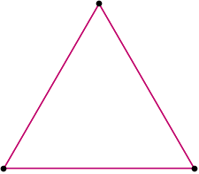 r2 = 1 Trivial. | 4. 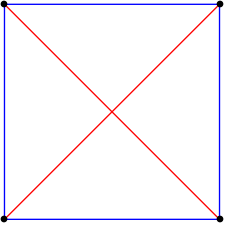 r2 = 2 Proved by Paul Bateman and Paul Erdös in 1951. |
| 5. 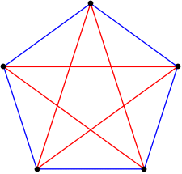 r2 = (3 + √5) / 2 = 2.618+ Proved by Paul Bateman and Paul Erdös in 1951. | 6. 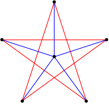 r2 = (5 + √5) / 2 = 3.618+ Proved by Paul Bateman and Paul Erdös in 1951. | 7. 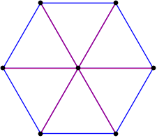 r2 = 4 Proved by Paul Bateman and Paul Erdös in 1951. |
| 8. 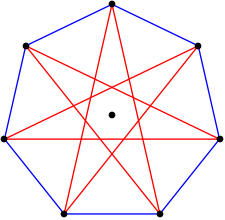 r2 = 1 / (2 - 2cos(π/7)) = 5.048+ Proved by Andras Bezdek and Ferenc Fodor in 1999. | 9. 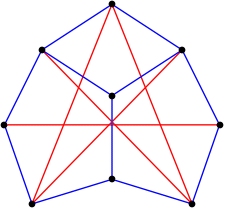 r2 = 6.600+ Found by David Cantrell in February 2009. | 10. 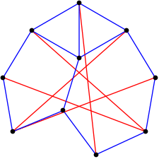 r2 = 7.713+ Found by David Cantrell in February 2009. |
| 11. 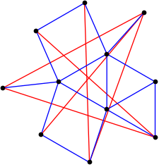 r2 = 8.222+ Found by David Cantrell in February 2009. | 12. 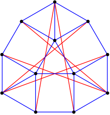 r2 = 5 + 2√3 = 8.464+ Found by Ingo Rechenberg in 2006. | 13. r2 = 9.930+ Found by David Cantrell in February 2009. |
| 14. 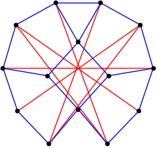 r2 = 10.994+ Found by David Cantrell in February 2009. | 15. 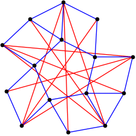 r2 = 12.038+ Found by David Cantrell in February 2009. | 16.  r2 = 12.890+ Found by David Cantrell in February 2009. Improved slightly by Timo Berthold, et al, in January 2026. |
| 17. 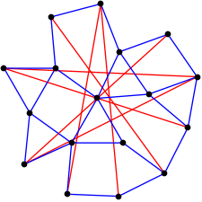 r2 = 14.090+ Found by David Cantrell in February 2009. | 18. 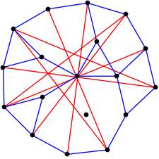 r2 = 14.725+ Found by David Cantrell in February 2009. | 19. 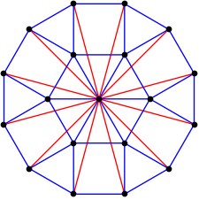 r2 = 8 + 4√3 = 14.928+ Found by David Cantrell in February 2009. |
| 20. 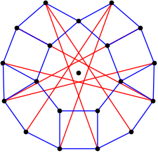 r2 = 16.734+ Found by David Cantrell in February 2009. | 21. 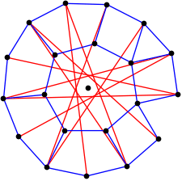 r2 = 17.774+ Found by David Cantrell in February 2009. Improved slightly by Timo Berthold, et al, in January 2026. | 22. 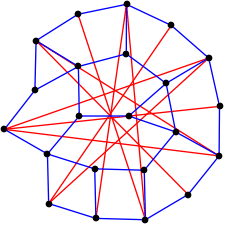 r2 = 19.053+ Found by David Cantrell in February 2009. Improved slightly by Timo Berthold, et al, in January 2026. |
| 23. 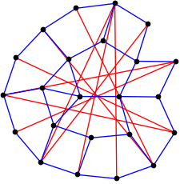 r2 = 20.039+ Found by David Cantrell in February 2009. | 24. 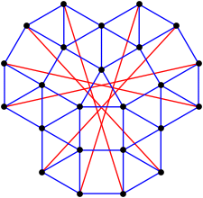 r2 = 14 + 4√3 Found by Charles Audet, Xavier Fournier, Pierre Hansen, and Frédéric Messine in January 2010. | 25. 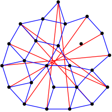 r2 = 22.121+ Found by David Cantrell in February 2009. |
| 26. 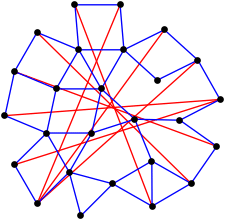 r2 = 22.810+ Found by Charles Audet, Xavier Fournier, Pierre Hansen, and Frédéric Messine in January 2010. | 27. 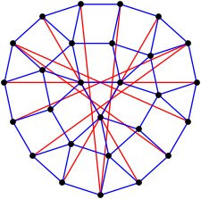 r2 = 23.083+ Found by Ingo Rechenberg in 2006. | 28. 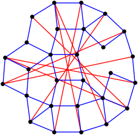 r2 = 24.981+ Found by Charles Audet, Xavier Fournier, Pierre Hansen, and Frédéric Messine in January 2010. |
| 29. 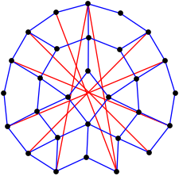 r2 = 25.924+ Found by Charles Audet, et al, in January 2010. Improved slightly by Timo Berthold, et al, in January 2026. | 30.  r2 = 26.879+ Found by Charles Audet, Xavier Fournier, Pierre Hansen, and Frédéric Messine in January 2010. |